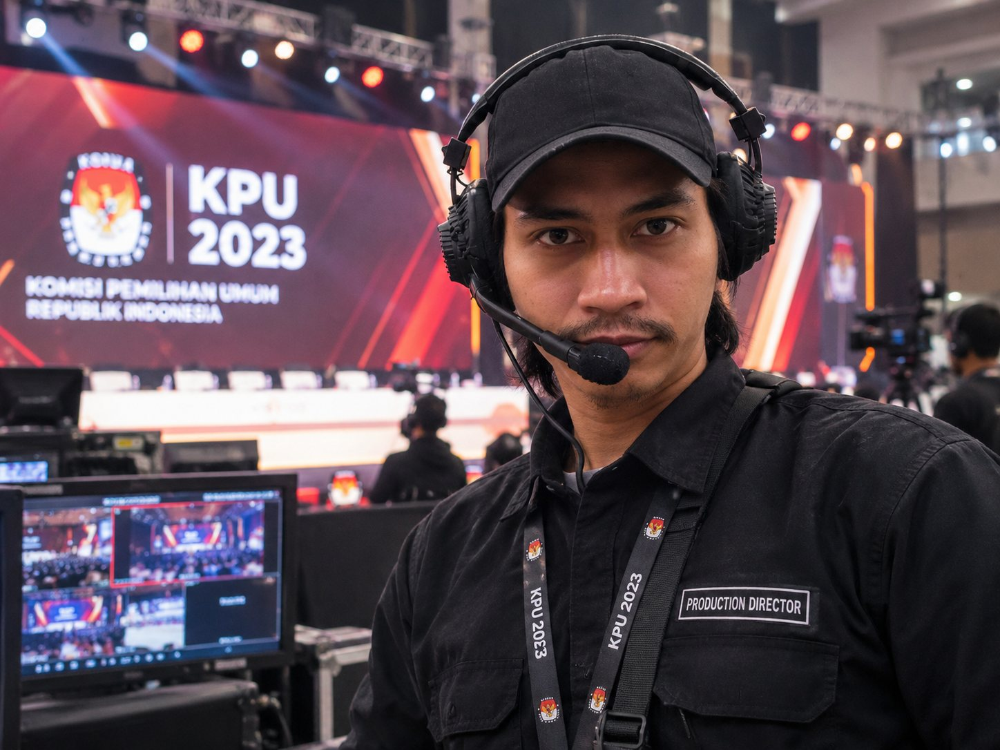
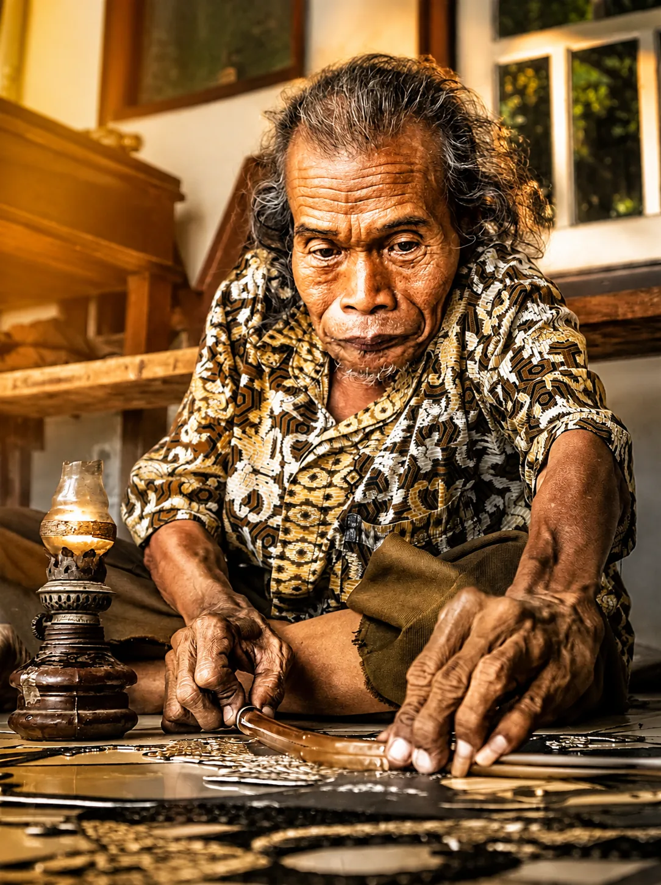

Live events, broadcast, camera and program direction where execution and coordination are central.
Work,
selected.
Production credibility first. Commercial and digital visuals follow as a curated archive, with claims kept proportional to the evidence.

KPU 2023 / CAMERAMAN & PROGRAM DIRECTOR ASIAN GAMES 2018 / PROGRAM DIRECTOR
ASIAN GAMES 2018 / PROGRAM DIRECTOR ASIAN PARA GAMES 2018 / PROGRAM DIRECTOR
ASIAN PARA GAMES 2018 / PROGRAM DIRECTOR



Different work.
One discipline.
Visual and content work for brands, products, food, beverage and other commercial contexts.
Content, social and digital work where creative direction meets communication and business context.
Deeper project records with documented scope, contribution, approach and evidence boundaries.
A separate visual gallery for photographic frames, edited as an image collection rather than a project-claim layer.